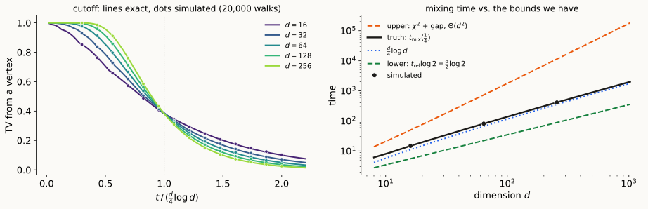
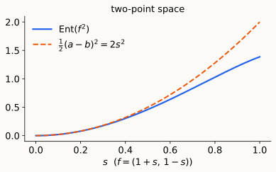
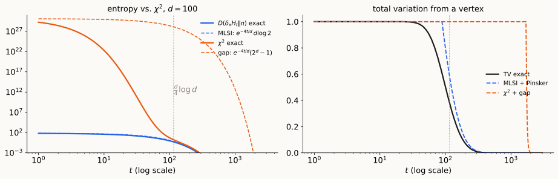

Why products are easy, Gross’s inequality,
and mixing on the hypercube at the cutoff
For \(f:\Omega\to\mathbb R\) and a probability measure \(\pi\):
\[\operatorname{Var}_\pi(f)=\mathbb E_\pi[f^2]-(\mathbb E_\pi f)^2,\] \[\operatorname{Ent}_\pi(f)=\mathbb E_\pi[f\log f]-\mathbb E_\pi f\,\log\mathbb E_\pi f\qquad(f\ge0).\]
From Lecture 4, for the continuous-time walk \(h_t=H_th_0\), \(\ H_t=e^{-tL_{rw}}\):
Open since Lecture 4: how do we bound \(\rho_0\) from below? Today: by reducing a big chain to small ones (tensorization).
Why bother, when the hypercube can be solved exactly? Exact formulas need exact independence. We want a method that also works for chains we cannot solve: other edge rates, non-product \(\pi\), Glauber dynamics. The hypercube is the test case: the method should recover its cutoff, constant included.
Lecture 5’s table for the hypercube \(\{0,1\}^d\) (flip a uniform coordinate at rate \(1\)):
| lower: \(t_{\rm rel}\) | upper: \(\chi^2\) + gap | upper: entropy + LSI | truth | |
|---|---|---|---|---|
| hypercube | \(\Theta(d)\) | \(\Theta(d^2)\) | ? | \(\sim\frac d4\log d\) (cutoff) |

\(\{0,1\}^d\), \(n=2^d\), flip a uniform coordinate at rate \(1\): \(\ \lambda=\frac2d\), cutoff at \(\frac d4\log d\) (Lecture 5).
| tool | what it gives | vs. truth |
|---|---|---|
| characters (exact spectrum) | \(\lambda=\frac2d\) | exact |
| canonical paths (bit-fixing, Lecture 5) | \(\lambda\ge\frac2{d^2}\) | off by \(d\) |
| Cheeger, \(\Phi=\frac1d\) (Lecture 6) | \(\lambda\ge\frac{\Phi^2}2=\frac1{2d^2}\) | off by \(d\) |
| \(\chi^2\) + gap (Lecture 4) | \(t_{\rm mix}\le\frac d2\big(\frac{d\log2}2+\log\frac1{2\varepsilon}\big)=\Theta(d^2)\) | off by \(\frac d{\log d}\) |
| entropy + MLSI | needs \(\rho_0\) of a chain with \(2^d\) states | ? |
| exact computation (bits independent) | \(\frac d4\log d\) (next slide) | exact, only for exact products |
The geometric tools see one big graph. The truth comes from structure: \(d\) independent bits, each updated at rate \(\frac1d\). Exact computation uses that structure but breaks once the bits are not exactly independent. Goal: an inequality that captures it.
Why a product. Flipping a uniform coordinate at rate \(1\) \(=\) giving each coordinate its own rate-\(\frac1d\) Poisson clock. Bit \(i\) is flipped iff its clock rang an odd number of times, independently over \(i\): \[\mu_t=\delta_xH_t:\quad y_i=x_i\oplus\xi_i,\quad\xi_i\overset{\text{iid}}\sim\mathrm{Bern}(p_t),\quad p_t=\Pr\big[\mathrm{Poi}(\tfrac td)\ \text{odd}\big]=\tfrac12\big(1-e^{-2t/d}\big).\] So the density factors: \(\ h_t=\frac{d\mu_t}{d\pi}=\prod_ih_i(y_i)\), with \(h_i\in\{2p_t,\ 2(1-p_t)\}\).
| combines by | one coordinate | from a vertex | |
|---|---|---|---|
| \(D=\mathbb E_{\mu_t}[\log h_t]\) | adds (\(\log\) of a product) | \(\mathrm{KL}_i\in\big[\frac12,\log2\big]\cdot e^{-4t/d}\) | \(\frac d2e^{-4t/d}\le D\le(d\log2)\,e^{-4t/d}\) |
| \(1+\chi^2=\mathbb E_\pi[h_t^2]\) | multiplies (independence under \(\pi\)) | \(\chi_i^2=(1-2p_t)^2=e^{-4t/d}\) | \(1+\chi^2=(1+e^{-4t/d})^d\) |
But this used exact independence of the dynamics. Change the edge rates, tilt \(\pi\), or couple the coordinates, and there’s no formula left. We want an inequality, valid for every \(h\), that holds for each coordinate with constant \(c\) and for the product with constant \(c/d\), and that survives comparison and perturbation. That is tensorization.
Two candidates for bounding \(\rho_0\) (both tensorize once entropy does, §2):
\[\textbf{MLSI:}\ \ \rho_0\operatorname{Ent}_\pi(h)\le\mathcal E(h,\log h)\] \[\textbf{LSI (Gross 1975):}\ \ \alpha\operatorname{Ent}_\pi(f^2)\le\mathcal E(f,f)\] \(\rho_0,\alpha\) (like \(\lambda\)) denote the largest constants for which these hold for all \(h>0\), resp. all \(f\).
Why LSI: its right side is the quadratic form \(\mathcal E(f,f)\).
Sandwich. \(\qquad 4\alpha\ \le\ \rho_0\ \le\ 2\lambda,\qquad \alpha\ \le\ \frac\lambda2 .\)
\(\rho_0\ge4\alpha\). For \(a,b>0\): \(\ (a-b)(\log a-\log b)\ge4(\sqrt a-\sqrt b)^2\) (with \(a=x^2>b=y^2\) this is \(\log\frac xy\ge\frac{2(x-y)}{x+y}\); symmetric in \(a,b\)). Edge by edge in \(\mathcal E\): \[\mathcal E(h,\log h)\ \ge\ 4\,\mathcal E(\sqrt h,\sqrt h)\ \ge\ 4\alpha\operatorname{Ent}_\pi\big((\sqrt h)^2\big)=4\alpha\operatorname{Ent}_\pi(h).\] \(\alpha\le\frac\lambda2\). Linearize, \(f=1+\epsilon g\), \(\mathbb E_\pi g=0\): \(\ \operatorname{Ent}_\pi(f^2)=2\epsilon^2\operatorname{Var}_\pi g+O(\epsilon^3)\), \(\ \mathcal E(f,f)=\epsilon^2\mathcal E(g,g)\). \(\square\)
Reversible chains \((\Omega_i,\pi_i,L_i)\), \(i=1,\dots,d\). On \(\Omega=\prod_i\Omega_i\) with \(\pi=\bigotimes_i\pi_i\): pick a uniform coordinate, update it: \[L=\frac1d\sum_{i=1}^dL_i\ \ (\text{acting on coordinate }i),\qquad\mathcal E(f,f)=\frac1d\sum_{i=1}^d\mathbb E_\pi\big[\mathcal E_i(f)\big],\] where \(\mathcal E_i(f)\) is the Dirichlet form of \(x_i\mapsto f(x)\), all other coordinates frozen. Likewise \(\operatorname{Var}_i\), \(\operatorname{Ent}_i\).
Efron–Stein. For product \(\pi\): \(\qquad\operatorname{Var}_\pi f\ \le\ \sum_{i=1}^d\mathbb E_\pi\big[\operatorname{Var}_if\big].\)
Proof. Let \(f_i=\mathbb E[f\mid x_1,\dots,x_i]\) (\(f_0=\mathbb Ef\), \(f_d=f\)) and \(\Delta_i=f_i-f_{i-1}\): orthogonal martingale differences, so \(\operatorname{Var}f=\sum_i\mathbb E\Delta_i^2\). Independence: \(f_{i-1}=\mathbb E[\mathbb E_if\mid x_1,\dots,x_i]\), so \(\Delta_i=\mathbb E[f-\mathbb E_if\mid x_1,\dots,x_i]\), and by Jensen \(\ \mathbb E\Delta_i^2\le\mathbb E(f-\mathbb E_if)^2=\mathbb E\operatorname{Var}_if\). \(\square\)
Poincaré tensorizes: \(\ \operatorname{Var}f\le\sum_i\mathbb E\operatorname{Var}_if\le\sum_i\frac{\mathbb E\,\mathcal E_i(f)}{\lambda_i}\le\frac d{\min_i\lambda_i}\,\mathcal E(f,f)\), i.e. \(\lambda\ge\frac1d\min_i\lambda_i\), the same answer as the spectrum.
Lemma. For \(f\ge0\): \(\qquad\operatorname{Ent}_\pi(f)=\sup\big\{\mathbb E_\pi[fg]\ :\ \mathbb E_\pi e^g\le1\big\}\), attained at \(g=\log\frac f{\mathbb E_\pi f}\).
Proof. Let \(\mu=f\pi/\mathbb E_\pi f\). By the Gibbs variational principle (Lecture 10, diagonal case), \(\ \mathbb E_\mu g\le D(\mu\Vert\pi)+\log\mathbb E_\pi e^g\). So if \(\mathbb E_\pi e^g\le1\), \[\mathbb E_\pi[fg]=\mathbb E_\pi f\cdot\mathbb E_\mu g\ \le\ \mathbb E_\pi f\cdot D(\mu\Vert\pi)=\operatorname{Ent}_\pi(f).\qquad\square\]
Tensorization of entropy. For product \(\pi\) and \(f\ge0\): \(\qquad\operatorname{Ent}_\pi f\ \le\ \sum_{i=1}^d\mathbb E_\pi\big[\operatorname{Ent}_if\big].\)
Proof. Same martingale: \(f_i=\mathbb E[f\mid x_1,\dots,x_i]\), and \(g_i=\log\frac{f_i}{f_{i-1}}\). Then \(\sum_ig_i=\log\frac f{\mathbb Ef}\), so by the equality case of the Lemma \[\operatorname{Ent}_\pi f=\mathbb E\Big[f\sum_ig_i\Big]=\sum_i\mathbb E[fg_i].\] Freeze all coordinates but \(x_i\). \(g_i\) depends on \(x_1,\dots,x_i\), and by independence \(\ \mathbb E_i f_i=f_{i-1}\), so \[\mathbb E_i\,e^{g_i}=\frac{\mathbb E_if_i}{f_{i-1}}=1\qquad\Longrightarrow\qquad\mathbb E_i[fg_i]\le\operatorname{Ent}_if\] by the Lemma, applied in coordinate \(i\). Average over the frozen coordinates and sum over \(i\). \(\square\)
Corollary. With \(\alpha_i,\rho_0^{(i)}\) the constants of factor \(i\): \(\qquad\alpha(\text{product})=\frac1d\min_i\alpha_i,\qquad\rho_0(\text{product})=\frac1d\min_i\rho_0^{(i)} .\)
Proof of \(\ge\) for LSI. \(\ \operatorname{Ent}f^2\le\sum_i\mathbb E\operatorname{Ent}_if^2\le\sum_i\frac{\mathbb E\,\mathcal E_i(f)}{\alpha_i}\le\frac d{\min_i\alpha_i}\,\mathcal E(f,f)\). MLSI: the same with \(h\) and \(\mathcal E_i(h,\log h)\). \(\le\) (both): test functions of one coordinate. \(\square\)
Beyond products. Glauber dynamics and Gibbs samplers update one coordinate at a time, but \(\pi\) is not a product (Ising, hard-core, …). Modern mixing proofs show approximate tensorization \(\operatorname{Ent}f\le C\sum_i\mathbb E\operatorname{Ent}_if\), via spectral or entropic independence (Anari–Liu–Oveis Gharan 2020; Chen–Liu–Vigoda 2021; Anari–Jain–Koehler–Pham–Vuong 2022).
Uniform \(\pi\) on \(\{0,1\}\), flips at rate \(1\): \(\ \mathcal E(f,f)=\frac12(a-b)^2\) for \(f=(a,b)\), \(\ \lambda=2\).
Theorem. \(\ \operatorname{Ent}_\pi(f^2)\le\frac12(a-b)^2\), i.e. \(\alpha=1=\frac\lambda2\).
Proof. WLOG \(a\ge b\ge0\) (replacing \(f\) by \(|f|\) only lowers the right side), and by homogeneity \(a=1+s\), \(b=1-s\), \(s\in[0,1]\). Let \(\varphi(s)=\operatorname{Ent}(f^2)\); we need \(\varphi(s)\le2s^2\), and \(\varphi(0)=0\). Differentiating, \[\varphi'(s)=2(1+s)\log(1+s)-2(1-s)\log(1-s)-2s\log(1+s^2)\] \[=4s-4\sum_{j\ \text{odd}\ \ge3}\frac{s^j}{j(j-1)}-2s\log(1+s^2)\ \le\ 4s .\ \ \square\]

Tensorize \(d\) copies of the two-point space, each at rate \(\frac1d\): \[\alpha=\frac1d,\qquad\lambda=\frac2d,\qquad 4\alpha\le\rho_0\le2\lambda\ \Longrightarrow\ \rho_0=\frac4d\ \text{exactly}.\]
With \(\log\frac1{\pi_{\min}}=d\log2\): \[t_{\rm mix}(\varepsilon)\ \le\ \frac d4\Big(\log d+\log\log2+\log\frac1{2\varepsilon^2}\Big)=\frac d4\log d+O(d).\]
| lower: \(t_{\rm rel}\) | upper: \(\chi^2\) + gap | upper: entropy + LSI | truth | |
|---|---|---|---|---|
| hypercube | \(\Theta(d)\) | \(\Theta(d^2)\) | \(\frac d4\log d+O(d)\) | \(\sim\frac d4\log d\) |
The Lecture 5 table, completed: entropy + LSI finds the cutoff location, constant included.

Theorem. If \(\alpha\operatorname{Ent}_\pi(f^2)\le\mathcal E(f,f)\) and \(\ \max_x\sum_yK(x,y)\big(F(x)-F(y)\big)^2\le v\), then \[\Pr_\pi\big[F\ge\mathbb E_\pi F+r\big]\ \le\ e^{-2\alpha r^2/v}.\]
Proof sketch. Let \(Z(s)=\mathbb E e^{sF}\) and \(f=e^{sF/2}\). Convexity, \((e^u-e^w)^2\le\frac{(u-w)^2}2(e^{2u}+e^{2w})\), and reversibility: \(\ \mathcal E(f,f)\le\frac{s^2}8\,v\,Z(s)\). LSI gives \(\ \operatorname{Ent}(e^{sF})=sZ'-Z\log Z\le\frac{s^2v}{8\alpha}Z\), i.e. \(\big(\frac1s\log Z\big)'\le\frac v{8\alpha}\), so \(\log Z(s)\le s\,\mathbb EF+\frac{s^2v}{8\alpha}\). Chernoff with \(s=\frac{4\alpha r}v\). \(\square\)
Gross’s theorem (stated). \(\alpha\operatorname{Ent}(f^2)\le\mathcal E(f,f)\) holds iff for all \(p>1\), \(t\ge0\): \[\|H_tf\|_{q(t)}\le\|f\|_p,\qquad q(t)=1+(p-1)e^{4\alpha t}.\]
Reading: Diaconis–Saloff-Coste §§1–3; Boucheron–Lugosi–Massart Ch. 4–5; Levin–Peres–Wilmer on the hypercube walk (coupling, strong stationary times, and the cutoff chapter).
| Object | Definition |
|---|---|
| Dirichlet form | \(\mathcal E(f,g)=\langle f,L_{rw}g\rangle_\pi=\frac12\sum_{x,y}\pi_xK(x,y)(f_x-f_y)(g_x-g_y)\) |
| entropy | \(\operatorname{Ent}_\pi(f)=\mathbb E_\pi[f\log f]-\mathbb E_\pi f\log\mathbb E_\pi f\); \(\ D(\mu\Vert\pi)=\operatorname{Ent}_\pi(d\mu/d\pi)\) |
| Poincaré, LSI, MLSI | \(\lambda\operatorname{Var}f\le\mathcal E(f,f)\); \(\ \alpha\operatorname{Ent}(f^2)\le\mathcal E(f,f)\); \(\ \rho_0\operatorname{Ent}(h)\le\mathcal E(h,\log h)\) |
| sandwich | \(4\alpha\le\rho_0\le2\lambda\), \(\ \alpha\le\lambda/2\) |
| product chain | \(L=\frac1d\sum_iL_i\), \(\ \mathcal E=\frac1d\sum_i\mathbb E\,\mathcal E_i\); \(\ \lambda,\alpha,\rho_0=\frac1d\min_i(\cdot)\) |
| tensorization | \(\operatorname{Var}f\le\sum_i\mathbb E\operatorname{Var}_if\); \(\ \operatorname{Ent}f\le\sum_i\mathbb E\operatorname{Ent}_if\) |
| variational formula | \(\operatorname{Ent}_\pi(f)=\sup\{\mathbb E_\pi[fg]:\mathbb E_\pi e^g\le1\}\) |
| hypercube | \(\lambda=\frac2d\), \(\ \alpha=\frac1d\), \(\ \rho_0=\frac4d\); \(\ t_{\rm mix}\le\frac d4\log d+O(d)\) |
| Herbst | \(\Pr[F\ge\mathbb EF+r]\le e^{-2\alpha r^2/v}\), \(\ v=\max_x\sum_yK(x,y)(F_x-F_y)^2\) |
| hypercontractivity | \(\|H_tf\|_{q(t)}\le\|f\|_p\), \(\ q(t)=1+(p-1)e^{4\alpha t}\) |